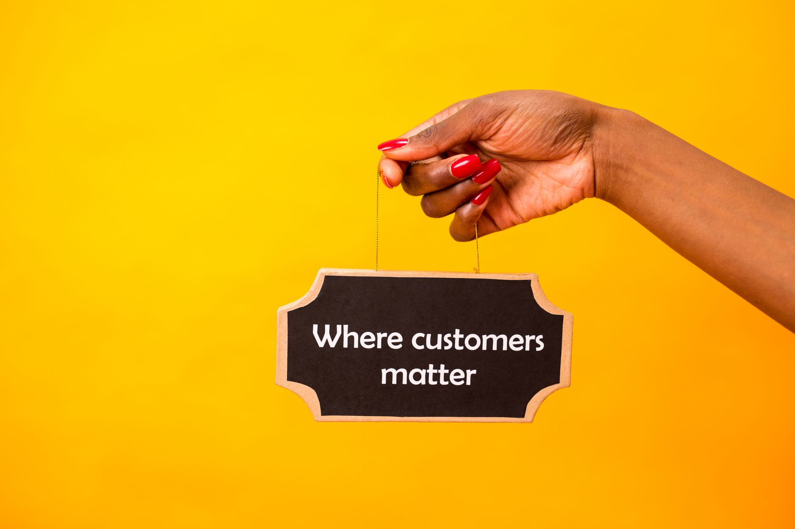

Online directories for small business which ones matter. You need the right directories to get found by local customers. Most businesses mess up their online listings, so let's fix that. We cut the noise and get you showing up where your customers are searching. If you're ready to stop hoping for calls and start getting them, check out how we do it.

Why Directories Aren't Just About Having a Listing
Which Online Directories Matter Most for Your Local Business Visibility
Your Google Business Profile is number one. That’s where you put eighty percent of your directory effort. Most other listings don't matter as much. You need to get that profile set up right first.

Don't just sign up for big, general directories. Find directories specific to your trade. Look for plumbing directories or local salon listings. These targeted places matter more than massive, vague sites.
Keep your business details identical everywhere. Your name, address, and phone number must match exactly across every single directory you list. If they don't match, Google gets confused. That confuses search engines.
Review sites are important for local trust. Directories that let people leave reviews are crucial. They show customers that other local people have used your service.
Use directories to build consistent presence. This builds authority over time. It's not about getting one big boost. It’s about showing up right where your customers are looking. You can start setting up your Google Business Profile today.
The Top 5 Online Directories That Actually Matter for Local Search
Which Online Directories Matter Most for Your Local Business Visibility
Your Google Business Profile is number one. That’s where you spend most of your time. Get it set up right. Focus eighty percent of your directory effort there first. This is your main spot on Google Maps and Search.
Don’t just list everywhere. Find directories specific to your trade. Look for plumbing directories or local salon listings. General directories get lost in the noise. Niche places help you show up when people search for exactly what you do.
Keep everything the same. Your business name, address, and phone number must match exactly across every directory you list. If they don't match, search engines get confused. Consistency builds trust.
Review sites matter too. Directories that show reviews build local trust. Yelp or industry-specific review platforms help people see what others say about your service. This is a key signal for local search.
Use directories to make sure you show up everywhere. This is about being seen consistently online. It’s not about getting a huge number of clicks. It’s about being the answer when someone needs your service right now. Check out our guide on setting up your Google Business Profile.
How to Choose Directories That Build Real Local Trust
Which Online Directories Matter Most for Your Local Business Visibility
Your Google Business Profile is number one. Spend most of your directory effort here first. It’s the single most important listing for local search. Get it set up right.
Don't waste time on huge, general directories. Look for directories specific to your trade. Find plumbing directories or local salon listings. These target people actually looking for your service.
Keep everything the same everywhere. Your business name, address, and phone number must match exactly on every listing. If they don't match, search engines get confused. Consistency builds trust.
Review sites help you show up. Directories that let people leave reviews are key for local trust. People look at these to see if you're worth a call.
Use directories to build your name everywhere. This builds authority. It gets you seen consistently. You're not just listing places. You're showing up where your customers search.
Setting Up Your Google Business Profile: The Non-Negotiable First Step
Which Online Directories Matter Most for Your Local Business Visibility
Your Google Business Profile is number one. Spend most of your directory time here. Forget the huge, generic sites. Find directories specific to your trade. Look for plumbing directories or local salon listings. These matter more than massive, broad sites.
Keep your business details the same everywhere. Your name, address, and phone number must match exactly across every directory you list. If they don't match, search engines get confused. Consistency builds trust.
Review sites are also vital. Directories that help show off reviews matter for local trust. People look for proof before they call. Focus on building consistent listings across the web. That's how you get found.
Get the setup right. Check out our guide on getting your Google Business Profile set up correctly. You'll see how.
Making Sure Your Directory Listings Match Your Website
Which Online Directories Matter Most for Your Local Business Visibility
Your Google Business Profile is number one. You need to put most of your directory effort there first. It’s the most important place to show up when someone searches for your service near you.
Don't just sign up for huge, general directories. Find directories specific to your trade. Look for plumbing directories or local salon listings. These targeted places matter way more than the massive, generic ones.
Keep everything the same everywhere. Your business name, your address, and your phone number must be identical across every single directory you list. If they look different, search engines get confused. Consistency builds trust.
Review sites are also key. Directories that help show off customer reviews matter for local trust. Things like Yelp or industry-specific review spots help people decide to call you.
Use directories to make sure you show up consistently online. This builds authority for your business. You'll see more local calls when you do this right.
For setting up your Google Business Profile, check out our guide.
Stop paying for marketing fluff that doesn't get calls. See how we get your local business found on Google right now at /#contact.
Related
- Facebook Ads Budget For Local Business How Much To Spend
- Google Ads For Small Business Is It Worth It
- YouTube For Local Business Worth It Or Not
Read next: Facebook Ads Budget For Local Business How Much To Spend